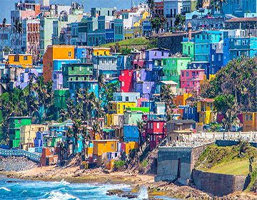

Datos de San Juan
San Juan tiene como antecedente a su fundación el establecimiento de la villa de Caparra. En 1509, Juan Ponce de León fundó Caparra, primer poblado español de la Isla. El mismo fue situado hacia el sur de la Bahía de San Juan. Entre 1519 y 1521, los vecinos solicitaron el traslado del poblado a la isleta de la bahía. Con el establecimiento del poblado vino un nuevo nombre: Puerto Rico. Pronto en el siglo XVI, el sitio se convirtió en un baluarte militar para la Metrópoli ya que su posición geográfica era un punto estratégico de defensa contra el avance de invasiones y ocupaciones extranjeras. Bajo esta perspectiva, la ciudad fue construida como un emplazamiento militar.
En las primeras dos décadas del siglo XX, la isleta comenzó a desarrollarse con fuerza. Por ejemplo, la calle Tetuán se transformó en un centro de actividad bancaria y financiera. En 1926, se estableció la Escuela de Medicina Tropical y, tres años más tarde, se inauguró el Capitolio. A mediados de siglo, la ciudad dio inició a sus mayores cambios, acorde con el proyecto de industrialización y exportación estatal. La última gran expansión del municipio ocurrió en 1951, cuando el pueblo de Río Piedras fue anexado a la capital. Este constituía el tercer municipio más poblado de Puerto Rico. Su estratégica ubicación al sur de San Juan, le sirvió como punto de encuentro de todas las vías de transporte principal en la Isla y como antesala geográfica a la isleta.
Al presente, en San Juan se desarrolla una nueva visión que pretende reformular su desarrollo cuestionado por muchos que entiende que el mismo es inimaginable en la zona. Por tal razón, entre estos nuevos retos se mencionan los términos del redesarrollo y rehabilitación sobre lo ya construido. Bajo estas modalidades, San Juan confronta sus nuevas problemáticas sociales y económicas en un mundo muy dispar al que le vio nacer.Símbolos
-
1La bandera de San Juan consiste de un paño blanco sobre el cual descansa el escudo de San Juan Bautista en su centro.
-
2El escudo es de origen incierto y su diseño ha sufrido varios cambios a través del tiempo. Este es muy parecido al de Puerto Rico. Originalmente, en 1799, el Rey Carlos IV de España, concedió a la capital el honor de orlar su blasón con el lema: “Por su constancia, amor y fidelidad, es muy noble y muy leal a esta ciudad” por el valor mostrado durante el último ataque inglés en 1797.
Geografía
La ciudad de San Juan está localizada en la costa norte de Puerto Rico y se extiende a lo largo de 123.5 kilómetros cuadrados (47.5 millas²). Es la capital de la Isla y su fundación data del siglo XVI. Se le conoce también como “la ciudad amurallada”, “ciudad capitalina”, “ciudad de las losas”, “ciudad colonial” y a sus habitantes como “los capitalinos” y “los senadores”, éste último en alusión a su equipo de béisbol. Constituye el municipio más poblado y con mayor densidad poblacional para un total de 442,447 sanjuaneros, según el Censo 2000. Sin embargo, su población ha experimentado un decrecimiento en las últimas décadas, producto del movimiento poblacional hacia los municipios adyacentes. La ciudad está organizada en 18 barrios: Caimito, El Cinco, Cupey, Gobernador Piñero, Hato Rey Central, Hato Rey Norte, Hato Rey Sur, Monacillo, Monacillo Urbano, Oriente, Pueblo de Río Piedras, Quebrada Arenas, Sabana Llana Norte, Sabana Llana Sur, San Juan Antiguo, Santurce, Tortugo y Universidad. El barrio más antiguo de la ciudad es San Juan Antiguo, conformado por la isleta de San Juan. Su santo patrón es San Juan Bautista, cuyas fiestas se celebran en el mes de junio.